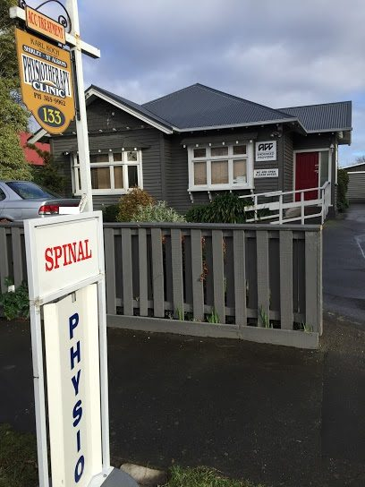

ACC accredited · Shirley, Christchurch
Your Local Christchurch Physiotherapist
Shirley – St Albans Physiotherapy is a community based physio clinic in Christchurch, centrally located in the suburb of Shirley. Warm and inviting premises, friendly staff and experienced physiotherapists who are happy to help.
- Monday – Friday8am ’til late
- 133 Hills RoadShirley, Christchurch 8013
- Off-street parkingEasy wheelchair access

ACC accredited clinicExperienced physiotherapists
McKenzie methodCertified provider
On-site gymExercise programmes made for you
Physiotherapy in Christchurch
What do we treat?
Our experienced physiotherapists offer a broad range of physiotherapy treatment, including:
Spinal therapy
Manipulative therapy
Musculoskeletal therapy
Orthopaedic rehabilitative treatment
Exercise therapy
Programmes for our on-site gym or for home.
The McKenzie method
We are a certified provider.
Acupuncture and dry needling
Do you suffer from back or neck pain?
McKenzie therapy may be able to help. Shirley – St Albans Physiotherapy is a certified provider of the McKenzie method, and spinal therapy is one of the treatments our physiotherapists offer.
About us
A community based clinic in the heart of Shirley
Shirley – St Albans Physiotherapy is a community based clinic in Christchurch, centrally located in the suburb of Shirley. We have warm and inviting premises and friendly staff who are happy to assist you.
We are an ACC accredited clinic, and our experienced physiotherapists can offer a broad range of physiotherapy treatment, from sports and spinal therapy through to orthopaedic rehabilitation, exercise therapy, acupuncture and dry needling.
Is Shirley – St Albans Physiotherapy ACC accredited?
Yes. We are an ACC accredited clinic. Phone us on 03 385 9962 to make an appointment.
Why Shirley Physio?
Five Reasons to Choose Shirley – St Albans for Your Christchurch Physio
- Effective physiotherapy treatments with experienced therapists with post grad qualifications
- You will get the most from your treatment
- You come first
- We look beyond the symptoms
- Physios who care
Types of treatment
A warm and friendly personal service
What happens at my first visit?
When you first visit us we will perform a comprehensive diagnosis of the cause of your pain. We then provide you with a quality care plan with detailed treatment and rehabilitation goals, customised to suit your particular needs.
- Comprehensive diagnosis
- Quality care plan
- Rehabilitation goals
What treatment methods do you use?
We use hands-on physiotherapy treatment methods ranging from massage to manipulation and mobilisation of your joints and muscles, as well as electrotherapy methods including ultrasound, interferential and TENS. We will also customise an exercise programme for you to follow in our on-site gym (or at home) to help strengthen and rehabilitate your injury.
- Massage
- Manipulation
- Mobilisation
- Ultrasound
- Interferential
- TENS
- Exercise programmes
Make an appointment
How do I book an appointment?
For bookings and appointments, phone 03 385 9962. You can also email us or visit the clinic at 133 Hills Road, Shirley.
-
Phone
-
Hours
Monday – Friday
8am ’til late -
Address
133 Hills Road, Shirley, Christchurch 8013
Get directions (opens Google Maps in a new tab)